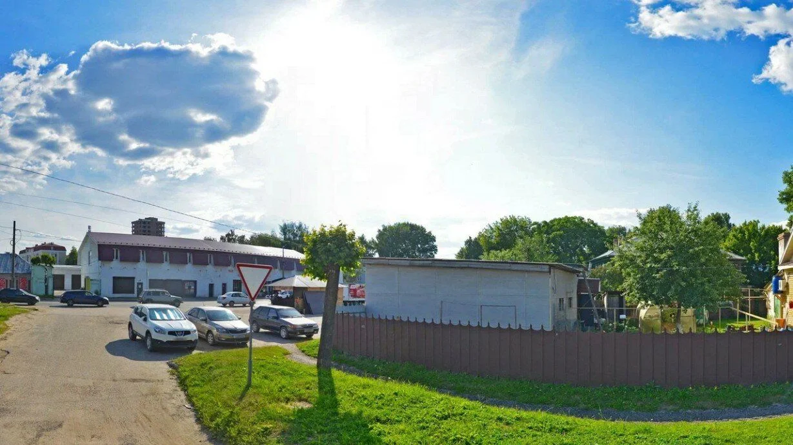
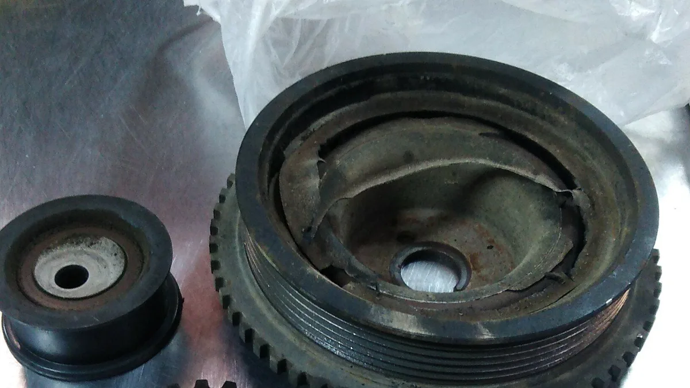

Автосервис в Йошкар-Оле · ул. Тимирязева
Диагностика и ремонт автоэлектрики в Йошкар-Оле
Автосервис «АвтоХелп» на улице Тимирязева: компьютерная диагностика, ремонт автоэлектрики, замена масла, промывка инжектора и ремонт форсунок. Отечественные легковые автомобили.
- 4,4 на Яндекс Картах, 6 отзывов
- Диагностика, автоэлектрика, форсунки, масло
- Пн-Пт с 09:00 до 18:00

Услуги: автосервис «АвтоХелп» в Йошкар-Оле
Входит
- Компьютерная диагностика автомобиля
- Ремонт автоэлектрики
- Замена масла
- Промывка инжектора, ремонт форсунок
- Отечественные легковые автомобили
Отдельно, если нужно
- Запись на время через форму на сайте, затем звонок для подтверждения
- Адрес: Йошкар-Ола, улица Тимирязева (точный номер дома - по телефону)
- Оплата наличными, есть парковка
Цены на диагностику и ремонт в Йошкар-Оле
Мастер называет стоимость после осмотра и диагностики автомобиля и согласует её до начала работ.
Диагностика и ремонт
- Компьютерная диагностика автомобиляуточнить
- Ремонт автоэлектрикиуточнить
- Замена маслауточнить
- Промывка инжектора и ремонт форсунокуточнить
Точные цены уточняйте по телефону перед визитом.
Как записаться в автосервис в Йошкар-Оле
- 01
Выбрали услугу и время
Выберите услугу, день и час в форме - заявка сформируется, дальше позвоните по номеру +7 (8362) 97-50-37. Марку, год и что беспокоит расскажете по телефону.
- 02
Подтвердили время
Время подтверждаем по звонку: +7 (8362) 97-50-37.
- 03
Осмотр и согласование
Мастер осматривает автомобиль, называет работы и стоимость. Дальше - по вашему решению.
- 04
Выдача автомобиля
Осмотрите результат вместе с мастером до оплаты.

Что пишут клиенты «АвтоХелпа»
Находят причину и устраняют
«Обращался несколько раз. Всегда находили причину и устраняли» - Сергей Скворцов, 17 сентября 2024.
Быстро принимают
«Приезжал на диагностику инжектора и регулировку клапанов, оба раза долго не ждал, быстро приняли» - Александр Б., 7 апреля 2025.
Мастера знают дело
«Мастера знают своё дело! Рекомендую!» - Елена Сандакова, 15 июня 2023.
Отзывы с Яндекс.Карт
«Отличные мастера с большой буквы! Не мог завести автомобиль, а они нашли неисправность за 2 минуты. В течении получаса все заменили. И автомобиль завёлся, радости не было предела! Знающие свое дело мастера! Огромное спасибо!»
Андрей Крылов · 24 ноября 2023
«Обращался несколько раз. Всегда находили причину и устраняли.»
Сергей Скворцов · 17 сентября 2024
«Приезжал на диагностику инжектора и регулировку клапанов, оба раза долго не ждал, быстро приняли.»
Александр Б. · 7 апреля 2025
Отзывы с карточки на Яндекс.Картах, без правок.
Частые вопросы
Какие работы делаете в Йошкар-Оле?
Компьютерная диагностика автомобиля, ремонт автоэлектрики, замена масла, промывка инжектора, ремонт форсунок, базовое сервисное обслуживание.
Какие автомобили принимаете?
Отечественные легковые автомобили.
Сколько стоит диагностика и ремонт?
Стоимость зависит от автомобиля и неисправности. Мастер называет её после осмотра и диагностики, до начала работ. Уточнить можно по телефону +7 (8362) 97-50-37.
Нужно ли записываться заранее?
Лучше записаться: выберите услугу, день и время в форме на сайте, затем позвоните по номеру +7 (8362) 97-50-37 для подтверждения.
Когда вы работаете и как оплатить?
Понедельник-пятница с 09:00 до 18:00, суббота и воскресенье - выходной. Оплата наличными.
Где находится автосервис?
Йошкар-Ола, улица Тимирязева. Точный номер дома подскажут по телефону +7 (8362) 97-50-37. Рядом есть парковка.
Запишитесь на диагностику или ремонт автоэлектрики
- Адрес
- ул. Тимирязева, Йошкар-Ола
- Часы
- Пн-Пт 09:00-18:00, Сб и Вс - выходной
- Телефон
- +7 (8362) 97-50-37